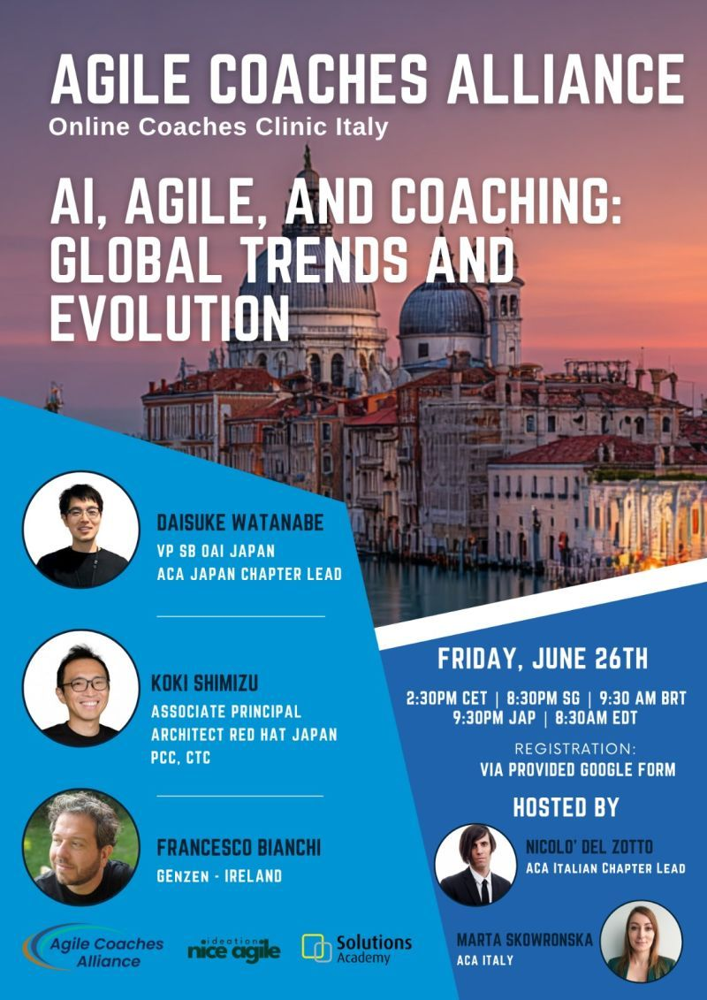

SB OAI Japan合同会社
エンジニアリング本部長
VP, Head of Engineering
Engineering & Organizational Leadership
SB OAI Japan合同会社エンジニアリング本部長
VP, Head of Engineering
ソフトバンク株式会社法人事業統括 SB OAI本部
エンジニアリング統括部 統括部長
ソフトバンク株式会社 / LINEヤフー株式会社グループASI戦略本部 /
メディア・検索ドメイン サイエンスSBU
AI、ソフトウェアエンジニアリング、健全な組織づくりを通じて、事業と社会の持続的な発展に貢献することを目指しています。
Credentials & Public Roles
「ソフトウェア開発の本質は、
人間関係の実践である。」
人と人が出会い、互いを尊重し、学び合いながらものづくりに取り組む。その積み重ねが、より良い社会につながると考えています。
Selected stories & appearances
SB OAI Japan合同会社 エンジニアリング本部長
VP, Head of Engineering
ソフトバンク株式会社 法人事業統括 SB OAI本部 エンジニアリング統括部長
半導体工学を基盤とし、計算基盤からソフトウェア、エンタープライズ領域までを横断しながら、大規模環境におけるAIの社会実装と事業価値の創出を推進しています。
AIを単なる技術としてではなく、企業の実際の業務に組み込み、事業価値として継続的に機能させることに取り組んでいます。
1994 — Present
半導体・通信システムの開発を起点に、メディア、広告、検索、生成AIへと領域を広げてきました。現在は、AIを企業や社会で継続的に活用できる形へ実装するための技術と組織づくりに取り組んでいます。
エンジニアリング本部長
VP, Head of Engineering
Crystal Intelligenceの導入・展開と、実装。FDE・TPM・SWE・AIエンジニア組織のマネジメント、育成、採用を担当しています。
法人事業統括 SB OAI本部
エンジニアリング統括部 統括部長
グループASI戦略本部を兼務し、グループ横断のAIプロジェクトとエンジニアリング組織を推進しています。
生成AI統括本部
戦略企画本部／AI開発本部
全社生成AI戦略と社内情報検索AIのプロダクトマネジメントを担当しました。10か月でMAUが400％成長し、10,000名超・組織の90％超が利用する基盤へ拡大しました。
テクノロジーグループ
技術研究室長
メディア・広告・検索・研究開発の各領域において、主要メディアの開発・BCP、技術戦略、1,000名超のエンジニアリング組織戦略と人材育成に携わりました。
執行役員
開発本部長
ニュースプロダクトと広告技術の開発、エンジニアリング組織の拡大、採用・人事・組織開発を担当しました。
システム開発本部 マネジャー
CTO
新規事業のマルチデバイス開発と、デジタルマーケティング領域の技術戦略・開発組織を担当しました。
ソーシャル事業本部
マネジャー
モバイル・ソーシャルアプリ、広告・検索領域の開発運営と、アジャイル開発・新規事業企画に携わりました。
プロジェクトマネジャー
プログラマー
日本テレビの番組Webサイト、箱根駅伝・選挙速報システム、読売新聞の主要ニュースメディアを開発しました。
UNIX-Cプログラマー
省庁の公共システム開発を中心に、NEC・東芝関連プロジェクト、NTTの交換機開発、KDDのデータ移行、J-COM@Homeのサーバー移行などに携わりました。
事業成果につながるソフトウェアエンジニアリングと、健全で持続可能なエンジニアリング組織づくり。その実践と支援を通じて、組織全体の力を引き出すことに取り組んでいます。
Speaking & Education
AI、アジャイル、ソフトウェアエンジニアリング、組織開発、半導体人材育成をテーマに、実践から得た知見を共有しています。

Agile Japan 2026 基調講演
AI・ソフトウェアエンジニアリング

Online Coaches Clinic Italy

生成AIに関するFD講演会

キャリアの中で感じたこと

組織スケールとアジャイル

モバイル・コンテンツビジネス

自治体におけるDX推進と人材支援
Build with empathy.